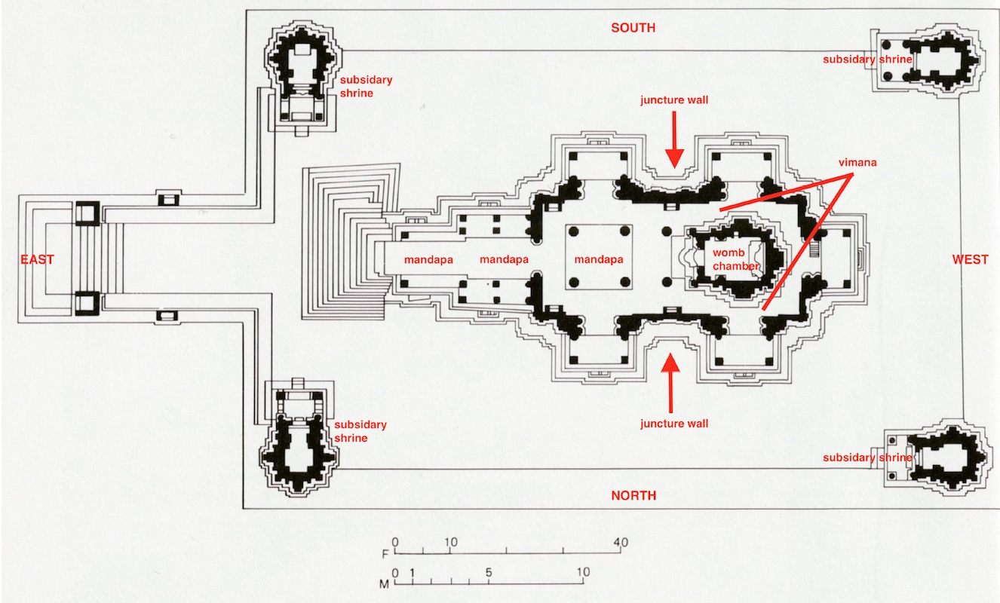

By Pardeep Singla

The temples at Khajuraho, including the Lakshmana temple, have become famous for these amorous images—variations of which graphically depict figures engaged in sexual intercourse. These erotic images were not intended to be titillating or provocative, but instead served ritual and symbolic function significant to the builders, patrons, and devotees of these captivating structures.
The Lakshmana temple was the first of several temples built by the Chandella kings in their newly-created capital of Khajuraho. Between the 10th and 13th centuries, the Chandellas patronized artists, poets, and performers, and built irrigation systems, palaces, and numerous temples out of sandstone. At one time over 80 temples existed at this site, including several Hindu temples dedicated to the gods Shiva, Vishnu, and Surya. [3] There were also temples built to honor the divine teachers of . Approximately 30 temples remain at Khajuraho today.
The central deity at the Lakshmana temple is an image of Vishnu in his three-headed form known as Vaikuntha who sits inside the temple’s inner womb chamber also known as garba griha—an architectural feature at the heart of all Hindu temples regardless of size or location. [4] The womb chamber is the symbolic and physical core of the temple’s shrine. It is dark, windowless, and designed for intimate, individualized worship of the divine—quite different from large congregational worshipping spaces that characterize many Christian churches and Muslim mosques.
The Lakshmana Temple is an excellent example of Nagara style Hindu temple architecture. [5] In its most basic form, a Nagara temple consists of a shrine known as and a flat-roofed entry porch known as mandapa. The shrine of Nagara temples include a base platform and a large superstructure known as sikhara , which viewers can see from a distance. [6] The Lakshmana temple’s superstructure appear like the many rising peaks of a mountain range.
Devotees approach the Lakshamana temple from the east and walk around its entirety—an activity known as circumambulation. They begin walking along the large plinth of the temple’s base, moving in a clockwise direction starting from the left of the stairs. Sculpted friezes along the plinth depict images of daily life, love, and war and many recall historical events of the Chandella period.